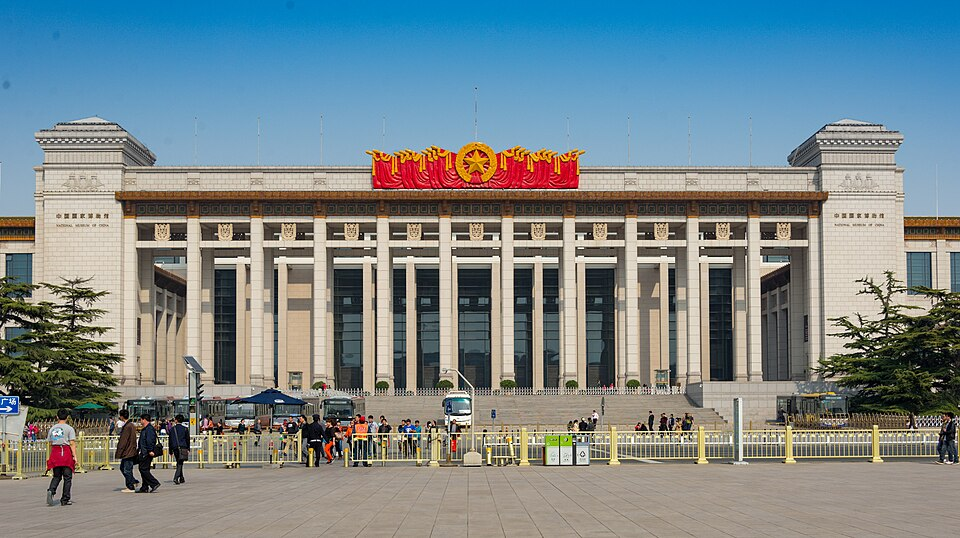
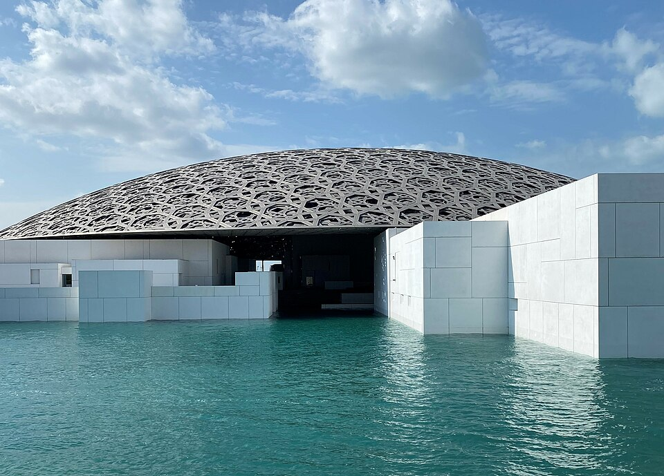
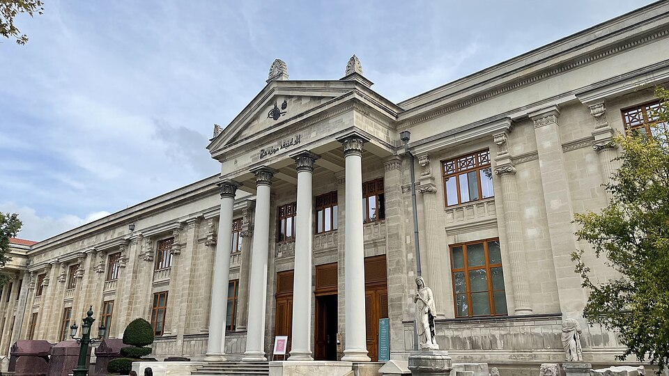

Токийский национальный музей
Старейший и крупнейший музей Японии, основанный в 1872 году. Более 110 000 экспонатов — от самурайских доспехов и керамики до буддийской скульптуры и гравюр уки-э. Расположен в парке Уэно.
Сайт музея
Китайский национальный музей
Один из крупнейших музеев мира по площади (192 000 м²). Более 1 000 000 экспонатов, охватывающих историю Китая от древнейших времён до наших дней. Расположен на площади Тяньаньмэнь.
Сайт музея
Музей Гуггенхайма в Абу-Даби
Филиал Музея Гуггенхайма, открытый в 2021 году на острове Саадийят. Проект Фрэнка Гери — «купол мира» из 7 850 звёзд. Крупнейший музей современного искусства на Аравийском полуострове.
Сайт музея
Музей Стамбула
Открыт в 2023 году — крупнейший музей Стамбула. Расположен в реконструированном историческом здании. Коллекция охватывает 300 000 лет истории — от неолита до современности.
Сайт музея